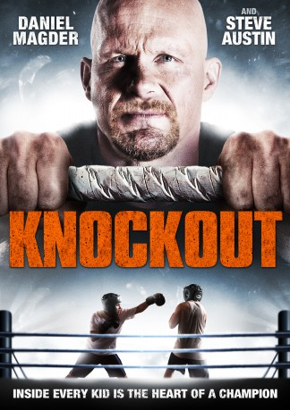
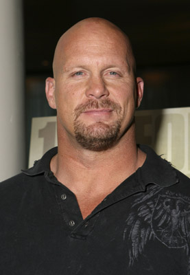
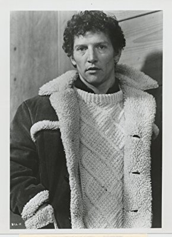

#7890 Knockout - Born to Fight
Alternativ: Born to Fight (Englischer Titel)
 
 IMDB-Wertung: 5.0 / 10
IMDB-Wertung: 5.0 / 10  Metascore: 0
Metascore: 0 
Dan Barnes (Steve Austin) is a former pro boxer who retired after growing weary of his violent existence. Now a school janitor, Dan tries to help a new student, Matthew Miller (Daniel Magder), who is being targeted by bullies. While Matthew learns how to box and stand up to his tormentors, one of whom is the school boxing champ (Jaren Brandt Bartlett), Dan's new found role as a teacher helps him come to terms with his tumultuous past.
Jahr: 2011
Dauer: 94 Minuten
FSK: 16
Land: Kanada Studio: Koch MediaTonspuren: DTS - ,
Untertitel: Deutsch,
Auflösung: 1080p (1920x1080) Größe: 6369 MB
Genre: Action, Familie
Regisseur: Anne Wheeler
Drehbuch: Evan Jacobs
Soundtrack: Daniel Seguin
Darsteller:
-  Steve Austin als Dan Barnes
- Daniel Magder als Matthew Miller
 Janet Kidder als Christine Miller
Janet Kidder als Christine Miller- Emma Grabinsky als Ruby
 Samuel Patrick Chu als Nick Wirthlin
Samuel Patrick Chu als Nick Wirthlin- Sean Devine als Jacob Miller
- Tess Atkins als Teresa Terrel
- Julian Domingues als Joe Fielder
- Catherine Lough Haggquist als Principal Lee
-  Scott Hylands als Grandfather Charlie Putman
- Adrian Formosa als Avery
- Benjamin Ratner als Mr. Doyle
- Bronwen Smith als Mrs. Nasher
- Jaren Brandt Bartlett als Hector Torres
 Roman Podhora als Coach Harward
Roman Podhora als Coach Harward- Jay Jauncey als Ray
Datei: X:\2011(G-M)\Knockout - Born to Fight (2011, FSK16, 1920x1080).mkv seit 02.01.2018
Festplatte: HD 2011(G-Z)
 Es gibt insgesamt 100 Filme in der Gruppe '2011(G-M)'
Es gibt insgesamt 100 Filme in der Gruppe '2011(G-M)'